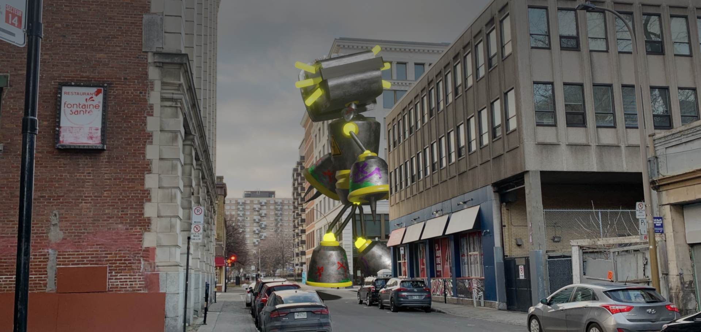
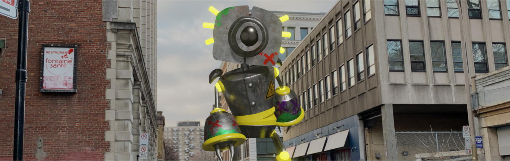
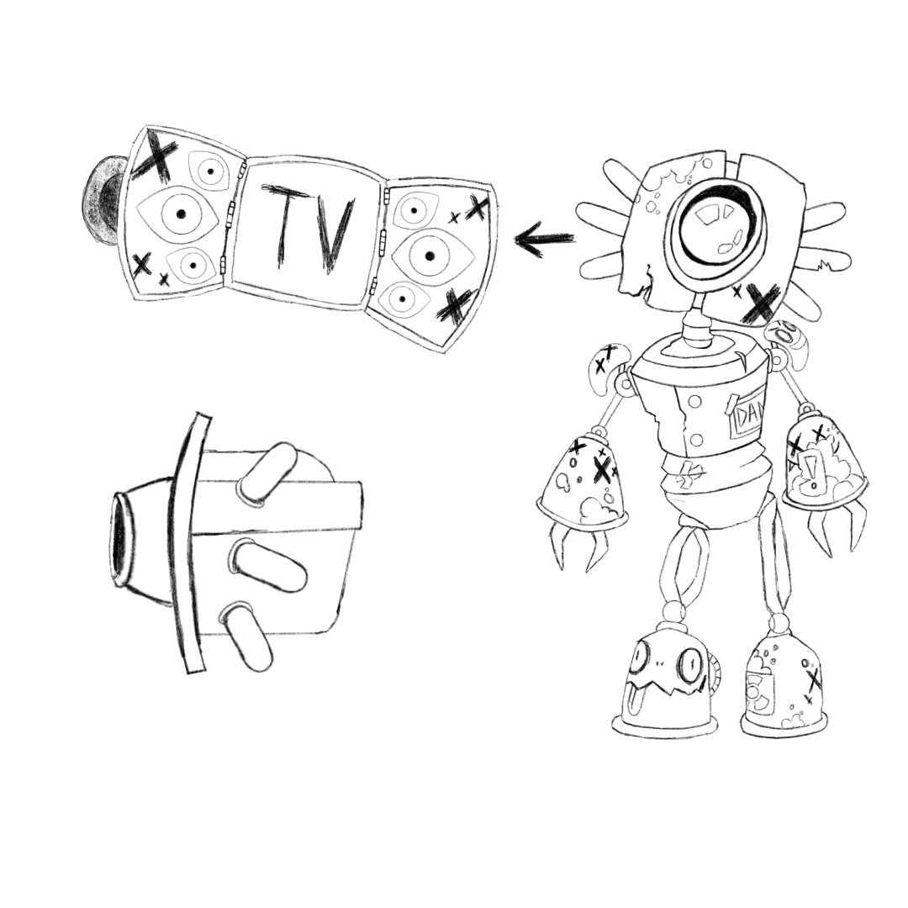
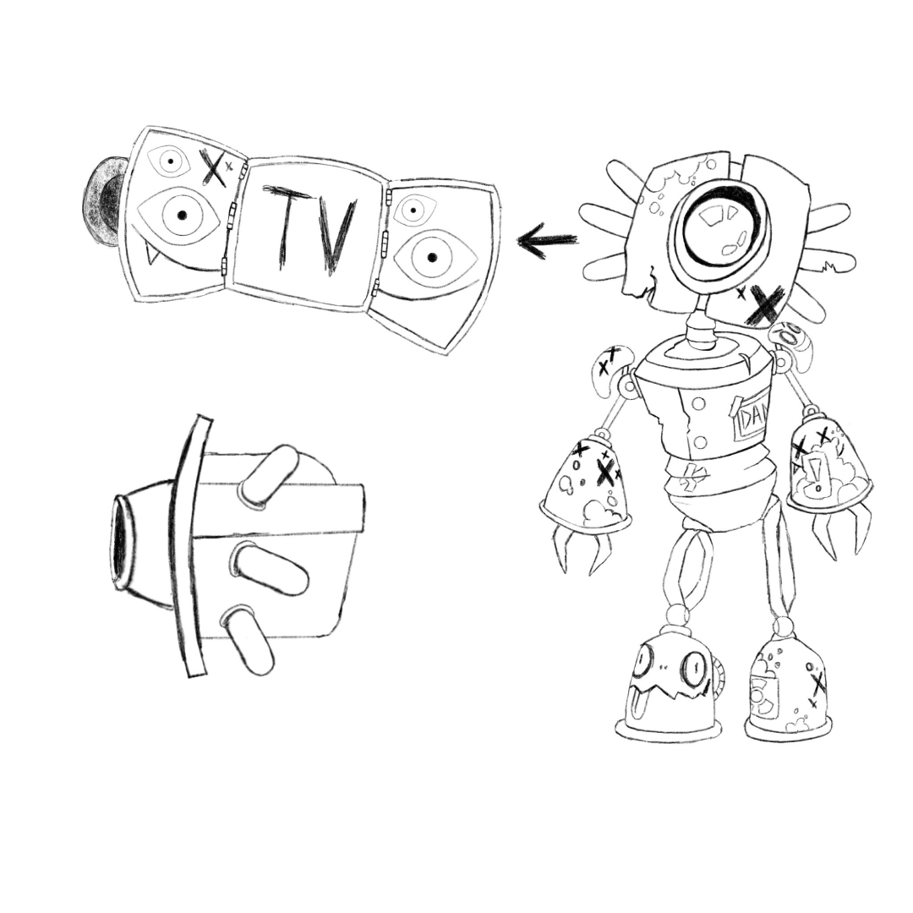

Animation Multimédia
Robot à Montréal

Description
Robot à Montréal est une animation mélangeant une scène photographiée et la modélisation 3D. Ce projet met en scène un robot destructeur circulant dans un paysage urbain. L’ambiance audio devait être montée de toutes pièces avec l’aide de sons disponibles sur le web.


